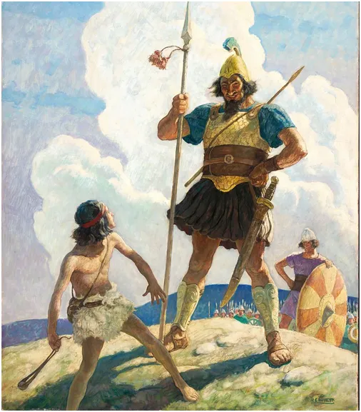
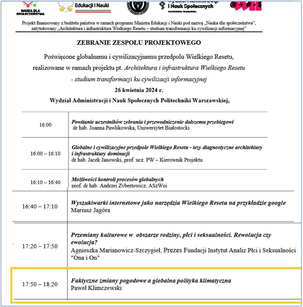

Opór ma sens! Pa, pa globcio?
Nieprawdą jest, że przyszłość jest zaplanowana i będzie realizowana zgodnie z planem. Gdy latem 1943, po bitwie pod Kurskiem, niemiecka pancerna armia niespodziewanie zaczęła się cofać konsekwencje tego wydarzenia zmieniły losy świata. Na świadomość ludzi miało to tak istotne znaczenie, że w okupowanej Polsce dokładnie 9 miesięcy później skokowo wzrosła liczba urodzeń, a była wtedy wyższa, niż po wprowadzeniu "500+"!

Podobnie w 1984, po pożarze głównego magazynu rakiet strategicznych Związku Radzieckiego, nastąpiła błyskawiczna erozja państwa komunistycznego za naszą wschodnią granicą i już rok później Ronald Reagan dyktował warunki sowietom. Dziś wojna nie toczy się o terytorium, lecz o umysły ludzi uwięzionych w cyberprzestrzeni informacyjnej. Celem ataku jest prawda.

Nie jest prawdą, że poza naszymi bańkami w mediach społecznościowych na świecie nic się nie dzieje. Zostałem jako gość zaproszony do poważnego grona, które prowadzi pracę naukową opisującą aktualne globalne przemiany. Dziękuje Wam wszystkim, którzy mnie wspieracie od lat i proszę o dalszą obecność i wsparcie w tej nierównej walce.
Paweł Klimczewski